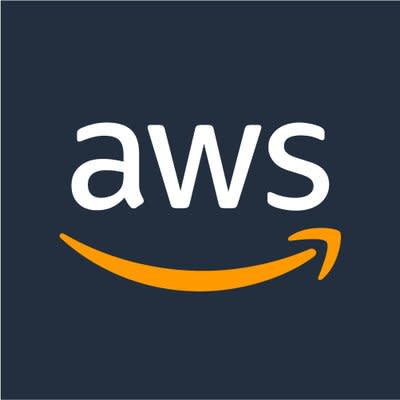

"The best way to predict the future is to implement it." - David Heinemeier Hansson
 Game Development Cost: 300$
Game Development Cost: 300$-
These courses will lead you through the most popular undergraduate course at Harvard, CS50.
The first course will introduce you to common programming languages, providing a strong foundation to build the skills necessary
to design and develop your own game. The second course will introduce you to the fundamentals of game programming itself.
You’ll explore the principles of 2D and 3D computer graphics, animation, sound, and collision detection.
What you’ ll learn:
- A broad and robust understanding of computer science, programming, and software development.
- Concepts like abstraction, algorithms, data structures, encapsulation, resource management, security, software engineering, and web development.
- Familiarity in a number of languages, including C, Python, JavaScript, SQL, CSS, and HTML.
- Principles of 2D and 3D graphics, animation, sound, and collision detection.
- Unity and LÖVE 2D, plus Lua and C#.
- The fundamentals of game design and development.
More info at: Explore game development and design
 Cloud Development Cost: Free of Charge
Cloud Development Cost: Free of Charge-
This online course will lead you through the programming languages and tools you will need to develop your own Cloud and Web Applications.
Introducing you to front-end, back-end, and full stack development.
You’ll focus on the languages you need for front-end development, working with HTML5, CSS3, and JavaScript.
Furthermore, you will discover tools such as Git, GitHub, and GitLab, that help you to store your projects and enable collaboration and continuos deployment.
What you’ ll learn:
- Understand the Cloud Development Ecosystem and Terminology like front-end developer, back-end, server-side, full stack, etc.
- Become familiar with the developer tools and IDEs used by web programmers.
- Work with programming languages used by front-end developers for creating user interfaces.
- Practice and develop hands-on skills to work with HTML, CSS and JavaScript.
- Manage and version control your projects with Git and GitHub.
More info at: Introduction to Cloud Development with HTML5, CSS3, and JavaScript
-  AWS Development Cost: Free of Charge
-
In this course you will develop and deploy applications on the AWS platform.
Throughout the course, working in Python on Linux, you will develop a web application building upon your developer skills and using AWS services and tools.
You will be introduced to general AWS concepts such as Regions, Availability Zones, Virtual Private Clouds (VPCs), and Security Groups.
What you’ ll learn:
- How to create and manage an AWS account.
- AWS fundamental concepts including Regions, Availability Zones, and Virtual Private Clouds (VPCs).
- How to install and use the AWS SDKs.
- How to use AWS compute services, both via the AWS Console and programmatically.
- How to use AWS managed services such as Amazon RDS.
- How to use Amazon AI image and text-to-speech applications.
- How to make your applications more durable, distributed, and highly available.
More info at: AWS Developer: Building on AWS
- iOS App Development Cost: Free of Charge
-
In this course you will learn the tools, techniques and concepts needed to build a basic iOS app, from scratch.
You will be introduced to the Swift programming language.
What you’ ll learn:
- Understand and use the Swift programming language.
- Use and explain the Apple developer tools: including Xcode, Interface Builder, Documentation Browser.
- Confidently converse with iOS developers, understanding the basics of coding and App development.
- Design, develop and build your own simple iOS Apps.
More info at: Build your very first iOS app
 Django App Development Cost: Free of Charge
Django App Development Cost: Free of Charge-
This course introduces you to the basics of SQL, a simple and powerful programming language for querying and managing data,
and the fundamentals of cloud databases. You will discover Object-Relational Mapping (ORM), and how to use Object-Oriented Programming (OOP)
languages to work with databases. You will learn how Django models, views and templates work together to present data on a website
and you will discover Bootstrap, a free and open-source web front-end framework.
What you’ ll learn:
- Describe a database and how to model data.
- Compose SQL queries to insert, select, update, and delete data in a database.
- Understand Object Relational Model (ORM).
- Integrate Bootstrap into your Django template and build interactive web pages.
- Employ Django to develop database-powered applications.
- Create and deploy your Django app on the cloud.
More info at: Django Application Development with SQL and Databases